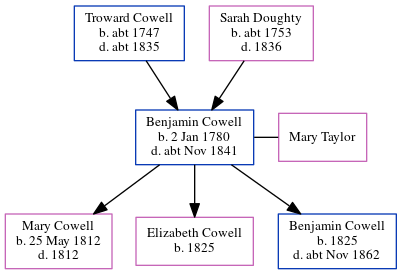

Benjamin Cowell 1780 - c1841
[ Home ] | [ Calendar ] | [ Surnames Index ] | [ Census Index ] | [ Family History ]The 3rd of 7 children of Troward Cowell and Sarah Doughty, Benjamin Cowell, the four times great-uncle of Nigel Horne, was born in Margate, Kent, England on Jan 2, 17801, was baptized there at St John the Baptist Church on Jan 30, 1780 and had 3 children with Mary Ann Taylor: Mary Ann, Elizabeth and Benjamin.
He died c. Nov 1841 in Thanet, Kent, England2.
Parents
- Troward was born c. 1747
- Sarah was born c. 1753
Children
- Mary Ann was born on May 25, 1812
- Elizabeth was born in 1825
- Benjamin was born in 1825
Citations
- Kent Baptisms - Findmypast
- England & Wales deaths 1837-2007 - Findmypast
Media
England & Wales deaths 1837-2007 - BMD/D/1841/4/AE/000440/022
Kent Baptisms - GBPRS/CANT/B/96208137
England Births & Baptisms 1538-1975 - R_883173268
Family Tree
Generated by ged2site. Last updated on Jun 11, 2024